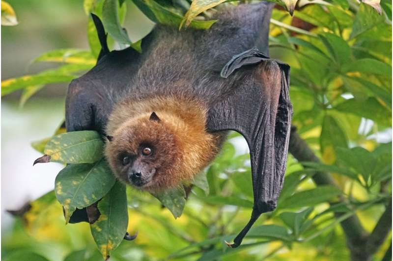

About the Mauritian Flying Fox
The Mauritian flying fox is the largest native mammal on the island, boasting top wingspan of over 30 ft. They are a species of nectar eating bats that live only on the small island of Mauritius off the coast of Madagascar. They once inhabited another close island, Réunion, but it became extint there some time before 1801.
These bats are most often active around dusk and dawn, but you wouldn’t find them near the cities. Instead, they make their homes deep in the forests where they eat whatever fruit they can get. Because of their fruit filled diet, they’re an important pollinator and seed spreader, with about 36% of their diet being rare or vulnerable plants.